Hello, thank you for purchasing a copy of State Tree!
I can be contacted any time at clovsergames@gmail.com or https://clovsergames.com
Consider joining my Discord for a more cozy and close contact!
I am friendly and will do my best!
Watch video tutorial at Youtube
No setup required after you imported the package in your project.
Reminder: Demo scene is made with URP so materials will show pink if you opened the package in built-in pipeline. You will need to assign new built-in materials yourself if that's the case and it should be alright again.
Lets start with opening the State Tree Editor from Tools > Sol Clovser > State Tree Editor > Editor Window.
1) And create an empty game object for testing.
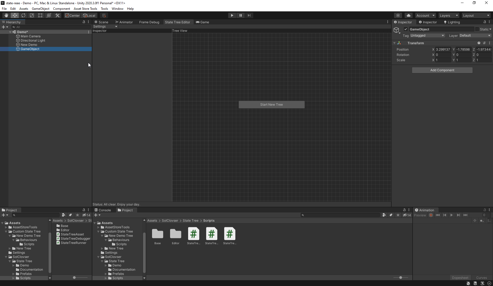2) Click "Start New Tree" and enter a name for your tree by clicking the tree name.
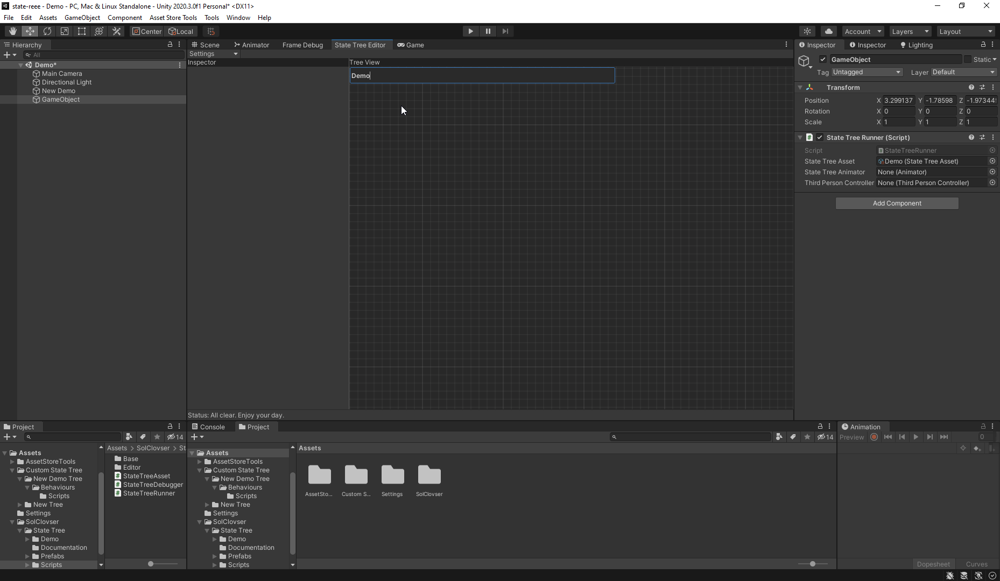3) Right click an empty are in the editor and create your first node as well as automatically created Root Node.
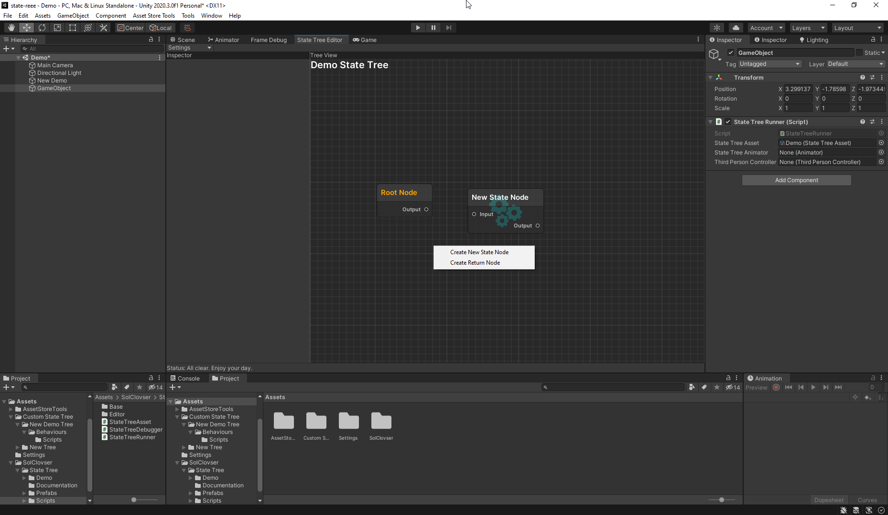4) Lets name it Idle and make the first connection from Root Node.
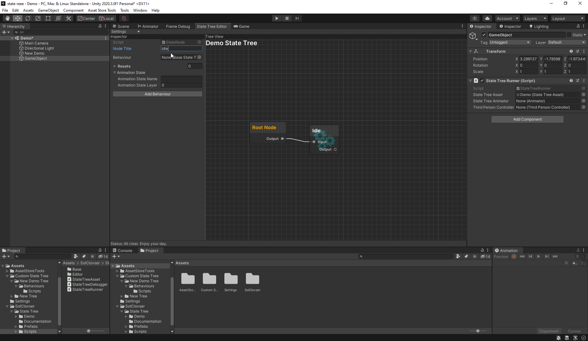5) Click Add Behaviour and enter a class name while Idle node is still selected and press enter after typing it.
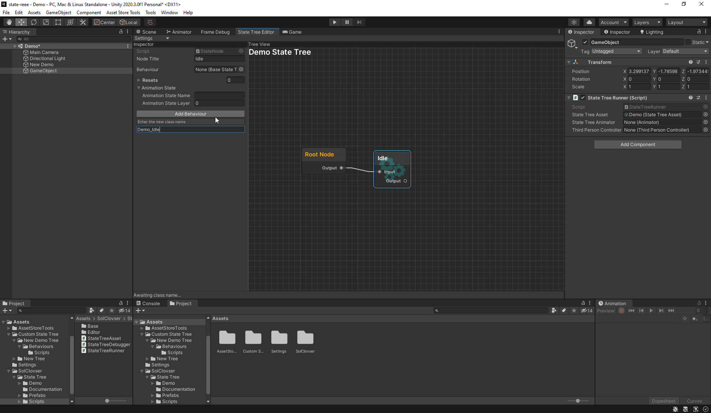6) Tool created required scripts and files for us.
Now we can click "Select Behaviour" and see the file(scriptable object) in project window.
Lets double click the Script field of this scriptable object in the Inspector to open the script file.
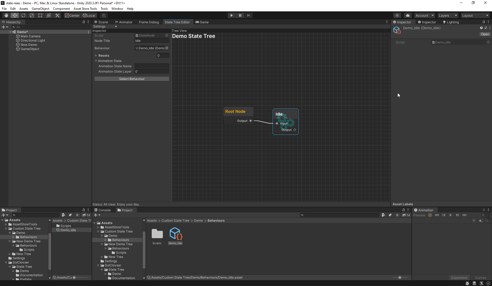7) This is the template tool has created for us.
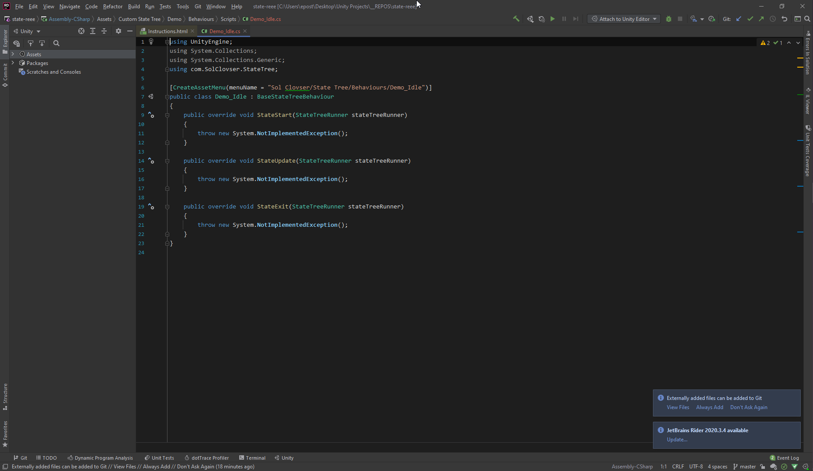8) Lets output something related to our state.
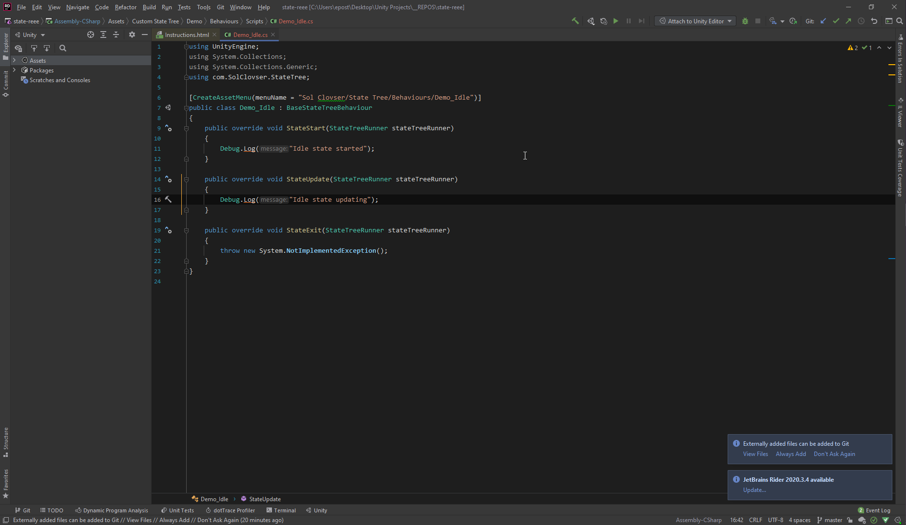9) As expected "Idle state started" logged 1 times when we enter the state.
And "Idle state updating" logs every frame while our Idle state is active.
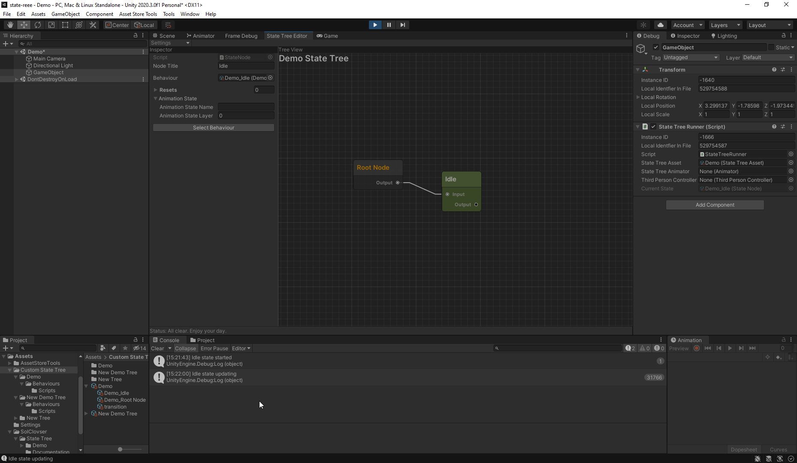10) Lets add a new state and name it Walk. Repeat the process and add its behaviour and connect it to Idle state.
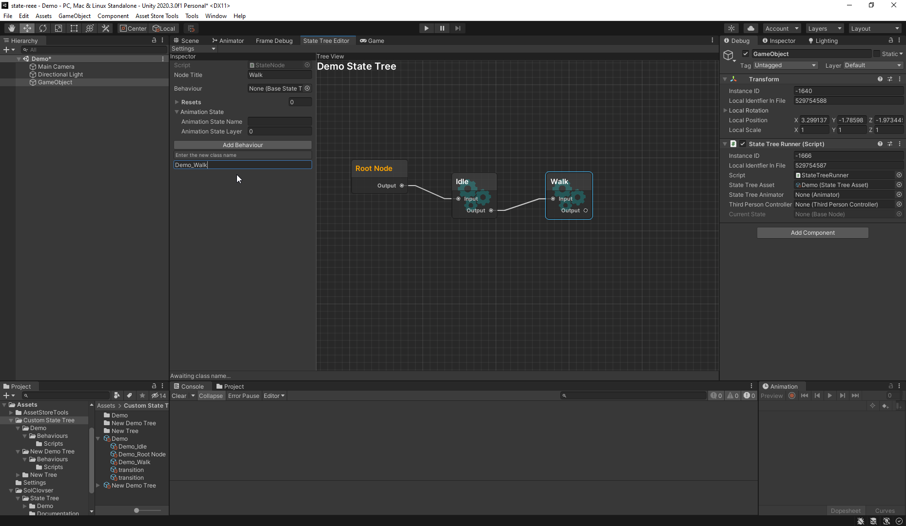11) This time we click the connection between Idle and Walk state and click "Add Condition" and enter a name for our class.
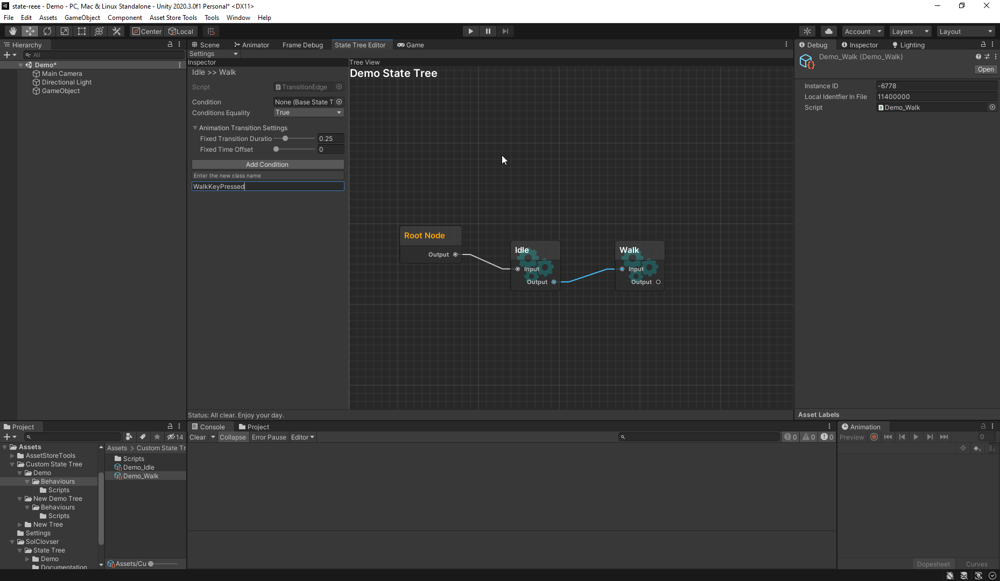12) Then we click "Select Condition" after it has been compiled and open its script the same way we did with states.
And this is the template tool created for us.
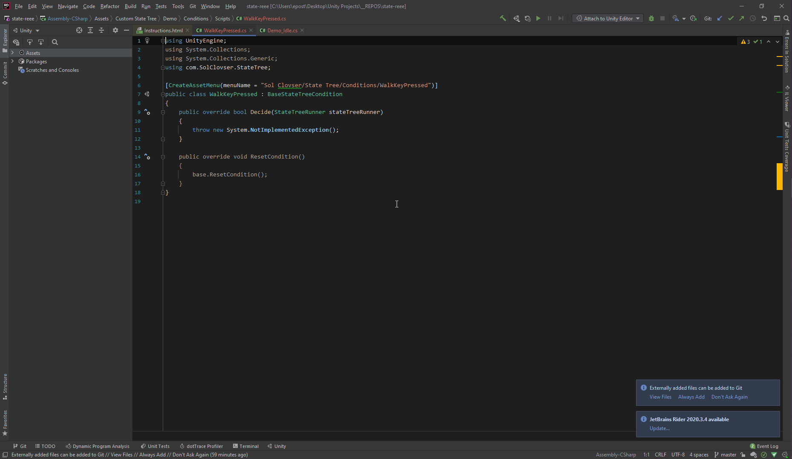13) Conditions basically run every frame while its node is active and it checks if it is true or false to decide if we should go to next state or not.
We are returning true if we are pressing W on keyboard. If not we are returning false.
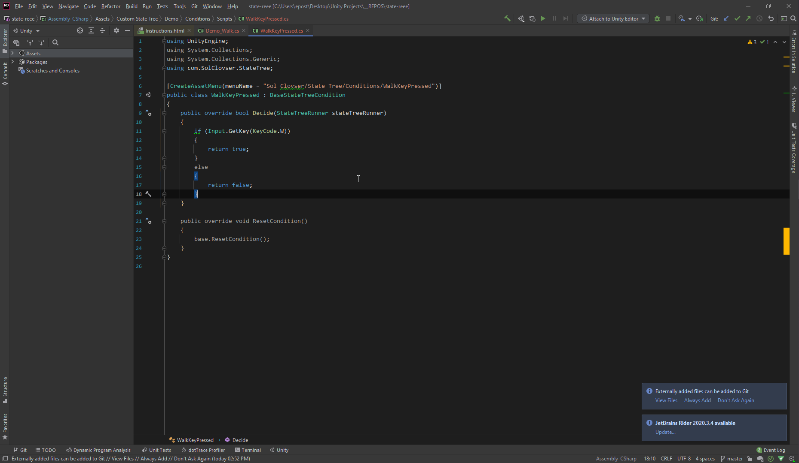14) And press play. Then we should see its transitioning to Walk state when we press W on the game window.
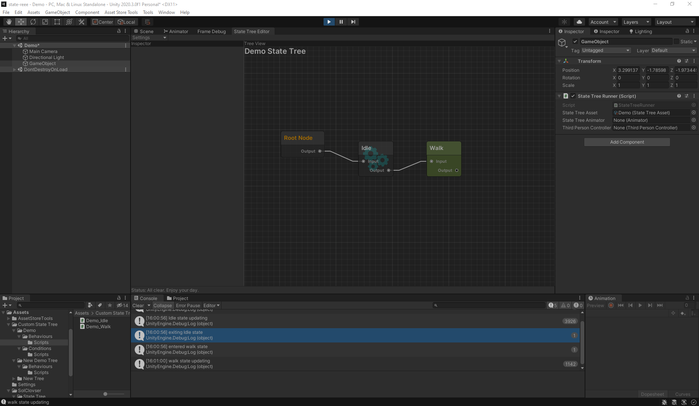15) Now we need to return to Idle state when we let go of W on keyboard.
To do this we add a Return Node by right clicking anywhere and select "state to return" in State Tree Inspector. In this case we want to return to Idle.
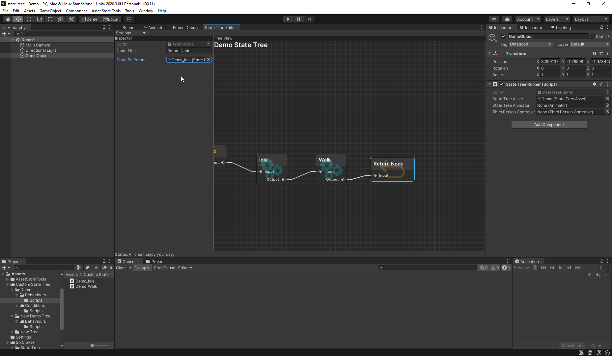16) Lastly lets select the connection between walk and return node.
Then select walk key pressed for our condition but this time we reverse it by selecting false. This effectively means if we are not pressing W on keyboard, return to idle.
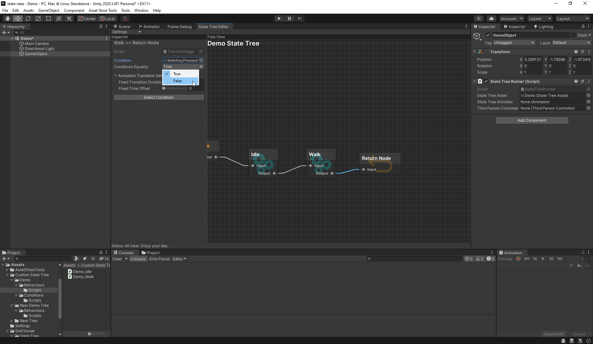17) And this is the base that all of our projects will evolve.
That's all. Thank you! Happy coding and good luck on your projects!
And please leave a review on the Asset Store. It really helps with further purchases.